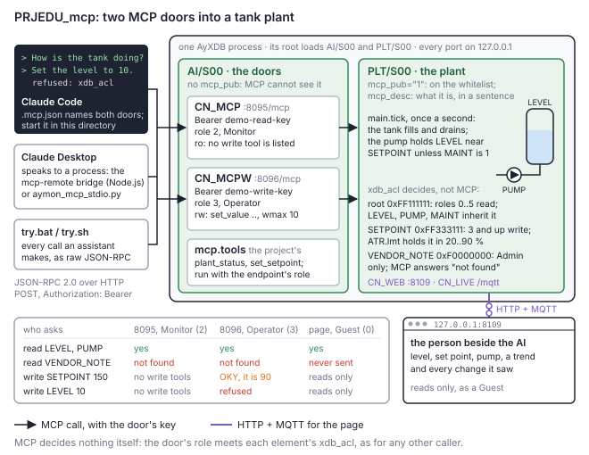

The plant, now
level
-- %
--
set point
-- %
the one value the write endpoint may change
inlet pump
--
maintenance mode
--
simulation steps
--
What changed every change this page saw, newest first
| nothing yet - run try.bat, or ask the assistant to change the set point |
What this page may see a page that did not log in: role 0
The same
xdb_acl that answers the assistant answers this page. VENDOR_NOTE
is for the administrator only (0xF0000000): it never arrives here, as it never arrives at
the read-only endpoint.How it works a sketch; click for full size
